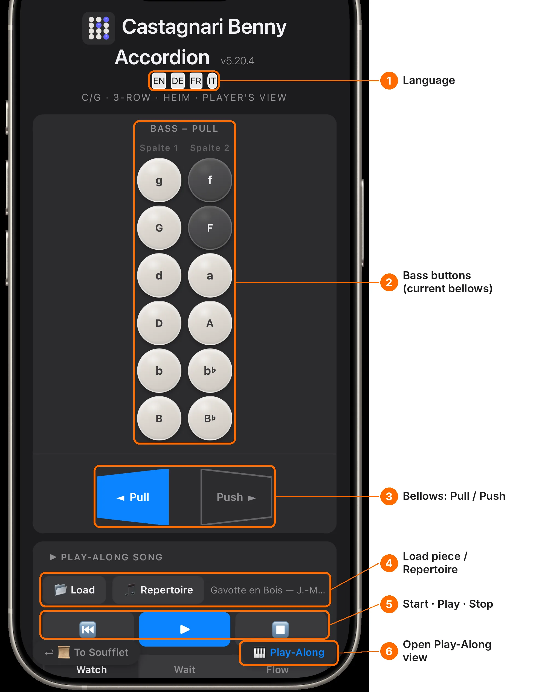

1 · Main view
Set language and bellows direction at the top; control the practice piece at the bottom.


- Language – EN · DE · FR · IT.
- Bass buttons – the basses for the current bellows direction, in two columns; dark buttons are active.
- Bellows – toggle Pull / Push; bass and treble layout switch with it.
- Load opens your own MusicXML or MIDI file, Repertoire the curated list with its Benny-fit rating (green = purely diatonic to red = chromatic).
- Transport – back to start · Play/Pause · Stop.
- Play-Along – opens the practice view with bass and treble side by side.
In the song panel below (not in the picture): tempo in bpm, metronome with a one-bar count-in, and Listen – in Wait mode Benny then advances via the microphone as soon as you play the right note on the real instrument.